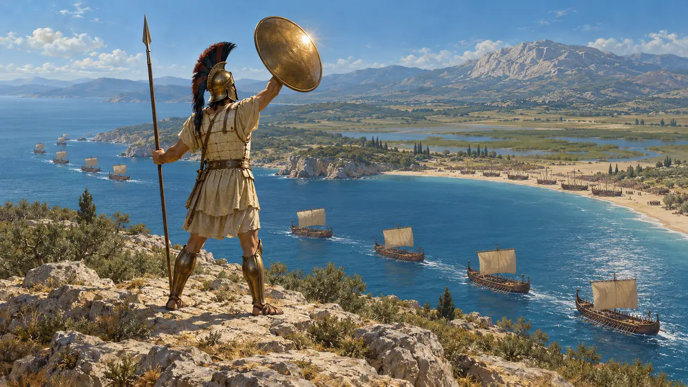
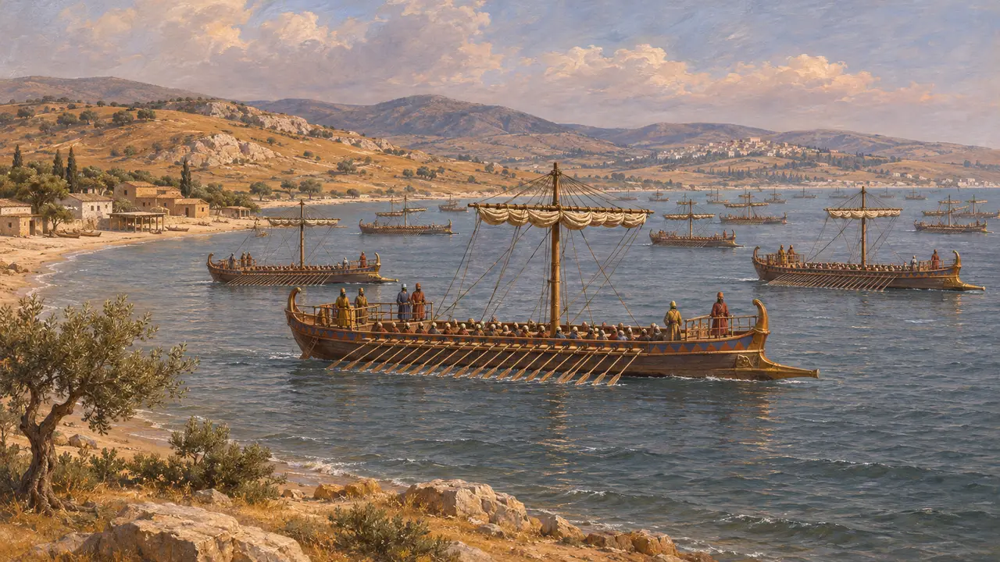
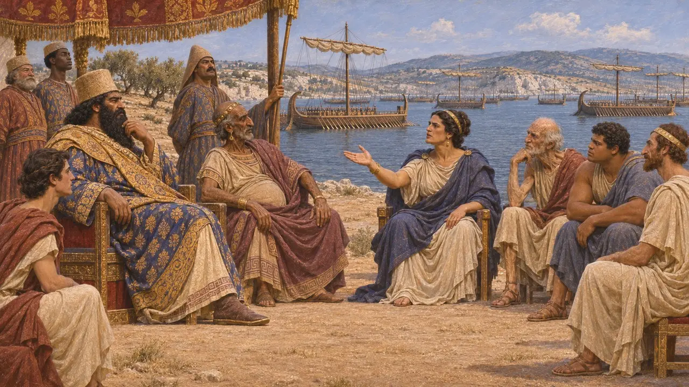
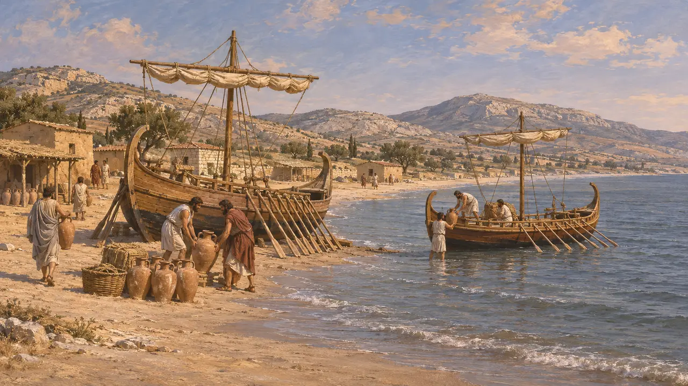
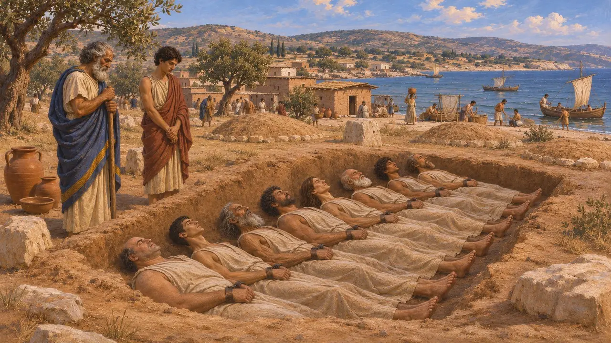

Falero
A baía aberta que era o porto de Atenas antes do Pireu, onde a frota do Rei chegou em 490 e 480 AEC
Falero era a ampla baía arenosa a sudoeste de Atenas, o porto da cidade até Temístocles fortificar o Pireu. Depois de Maratona, a frota persa contornou o Súnio e ancorou ao largo de Falero antes de zarpar de volta para casa. Em 480 AEC, a frota de Xerxes reuniu-se ali antes de Salamina.
No jogo: Falero é o fim da corrida marítima na segunda frente do nível de Maratona, onde a frota contorna o Súnio para chegar a Atenas antes do exército.

A corrida ao redor do Súnio
Relato antigoDepois da batalha de Maratona, a frota persa contornou o Súnio, esperando chegar primeiro a Atenas. Os atenienses marcharam de volta o mais depressa que puderam e acamparam no recinto de Héracles, em Cinosarges. Heródoto diz que a frota ficou por algum tempo ao largo de Falero, então o porto dos atenienses, e depois voltou para a Ásia.
Herodotus 6.115-116


Antes do Pireu
Relato antigoHeródoto chama Falero de porto marítimo dos atenienses em 490. Tucídides diz que Temístocles começou a fortificar o Pireu durante seu arcontado, em geral datado de 493/2, e que o porto da cidade passou para lá depois das Guerras Persas. A praia aberta de Falero era difícil de defender.
Herodotus 6.116; Thucydides 1.93

Sepulturas na baía
Nos registrosAs escavações no cemitério de Falero, desde 2012, encontraram muitos sepultamentos dos séculos VII e VI, entre eles homens enterrados acorrentados, em fileiras. Sua identidade é debatida, mas o cemitério revela uma movimentada comunidade litorânea muito antes do Pireu.
Phaleron Delta excavations, Greek Archaeological Service
Fontes
- Herodotus 5.63, 6.115-116, 8.66-69
- Thucydides 1.93